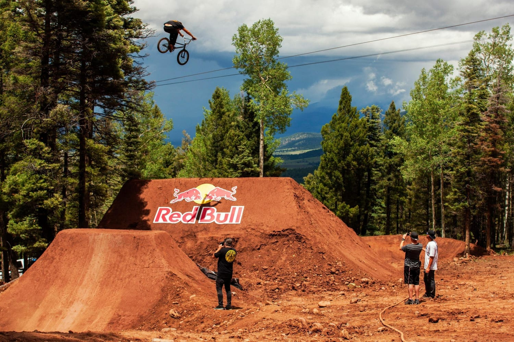

Le dirt est la discipline qui consiste à exécuter des figures sur bosses en terre, lors de contests. Les bosses sont généralement construites par les utilisateurs eux-mêmes ; celles d'appel et celles de réception sont, en général, espacées de plusieurs mètres, formant ainsi un long creux entre elles.
De nos jours, le dirt est une discipline qui demande de l'engagement afin de réussir les figures actuelles telles que 360°, backflip (salto arrière), frontflip (salto avant), tailwhip (le cadre du vélo effectue une rotation autour du tube de direction) ou busdriver, no hand, superman… La liste de ces figures est longue, et les meilleurs arrivent à en exécuter plusieurs dans un même saut.
